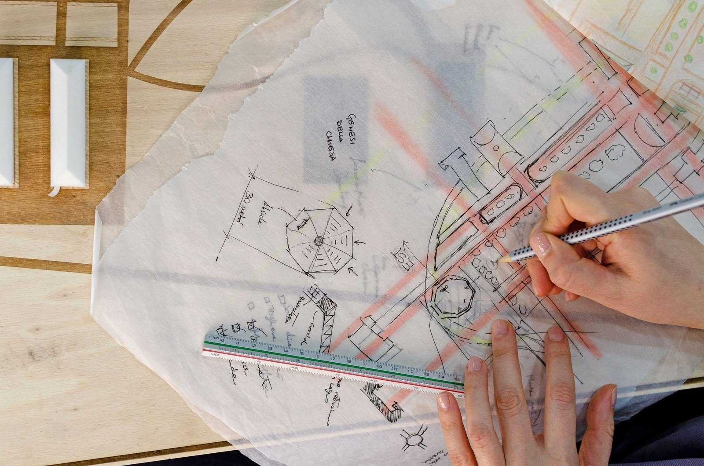

What does an architecture studio actually do?
Whether you are planning a home extension, renovating a property or developing a commercial space, understanding what an architecture studio actually does helps you make better decisions from the start.
Most people think architects draw plans. Drawings are part of what we do, but they are one output of a much larger process. A successful project takes careful planning, technical resolution, creative problem-solving, and the confidence to navigate a set of regulations that can feel opaque from the outside.
At FADP Architecture we believe the role extends well beyond producing drawings. We help clients turn ideas into buildable, well-considered spaces, and we make the journey clear along the way.
Architecture is problem-solving
Every project starts with a situation. A family has outgrown its home. A business needs a workspace that matches its ambitions. A building has potential, but nobody is sure where to begin.
Architecture is the discipline that answers those situations. It is the balance between creativity and practicality: a good building looks well made and also improves the way its occupants live and work. It maximises natural light, uses space efficiently, meets the regulations, holds its value, and stays functional over time.
Every decision influences the next. That is why good architecture begins long before the first drawing.
What a studio actually delivers
A modern architecture studio manages every stage of a project’s development. Beyond drawings, we coordinate the whole design and construction journey, working closely with the client so decisions are informed at every point.
Our work typically includes initial consultations and feasibility studies; architectural design; planning applications; building regulations and technical drawings; structural coordination; home extensions; loft, garage and basement conversions; renovations and refurbishments; new-build homes; commercial architecture; listed building and conservation guidance; principal designer services; and BIM and masterplanning where appropriate. Each service is a connected part of the same process, turning an initial idea into a completed project.

Every project begins with a conversation
Starting a project can be intimidating. Questions about planning permission, budget, timelines and regulations tend to arrive before any design work does. That is why every project starts with a free consultation.
The meeting is a conversation. We take the time to understand the goals, discuss the property, listen to concerns and explain the most sensible route. We give an honest first read on planning potential, realistic timescales and likely cost. There is no obligation to proceed. Afterwards, a written summary and a fixed fee for the next stage arrive, so the decision can be made in the client’s own time.
Your project, step by step
The most common frustration in construction is uncertainty. Clients do not know what happens next. We design the process to remove that uncertainty, one clear stage at a time.
Stage 1 — Free consultation
We begin by understanding the vision. It is the client’s opportunity to describe what they want, share existing drawings or surveys, discuss budget and ask questions. Whether we meet at the studio, on site or by video call, the client leaves with a clear understanding of the options.
Stage 2 — Feasibility and design
Ideas become architecture. We assess the opportunities and constraints of the property, then develop a design that balances aesthetics, practicality and planning policy — considering site constraints, natural light, internal layouts, structural requirements, planning policy, budget and long-term functionality. Every design is tailored to the property and the way the client wants to use it.
Stage 3 — Planning and approvals
Planning permission is the stage that homeowners tend to worry about most. Our role is to simplify it. We prepare and submit the application, coordinate the required documentation, communicate with the local authority and monitor progress through the review. We keep the client informed at every step.
Stage 4 — Technical design
Planning approval is not the end. Before construction, contractors need detailed technical information setting out exactly how the building is to be built. We prepare comprehensive drawing packages and coordinate with structural engineers and other consultants so the project is ready for site.
Stage 5 — Construction and completion
As construction progresses we remain available to answer technical questions and support the project where required. The aim is straightforward: the completed building should reflect the original design intent, and its quality should hold from first drawing to final inspection.
More questions?
See our full FAQ page — answers to the most common questions about fees, planning permission, party walls, surveys, and how we work.
Why good architecture adds value
A well-designed project delivers more than additional floor area. It improves how a building functions, increases natural light and comfort, adds property value, makes better use of underused space, improves energy performance, supports future changes of use, and creates places that are enjoyable to occupy. Good architecture is not about making buildings larger. It is about making them better.
Why FADP
Every practice has an approach. Ours is built around clarity, collaboration and trust. Working with FADP means a free, no-obligation initial consultation; fixed-fee quotations; honest advice from the outset; direct communication throughout; clear explanations without unnecessary jargon; and support from concept through planning, technical design and construction.
Projects are significant investments. Clients deserve transparency at every stage.
Looking ahead
Every successful project begins with a conversation. Whether the brief is an extension, a loft conversion, a renovation, a commercial development or a new building, involving an architectural designer early uncovers opportunities, resolves problems before they arise, and creates a smoother path from concept to completion.
Our role is not simply to draw. It is to guide clients through every stage with confidence, clarity and expertise.
Ready to talk about your project?
Book a free consultation and see how we can help. A director takes every first meeting.
Get in touch